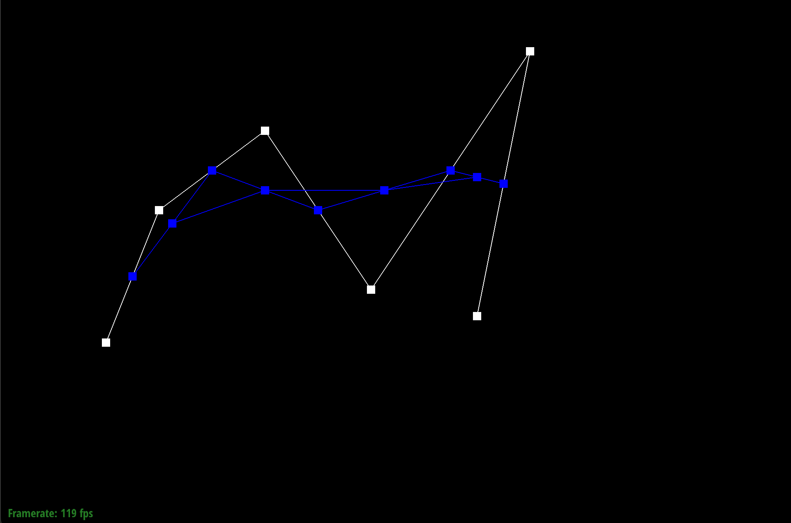
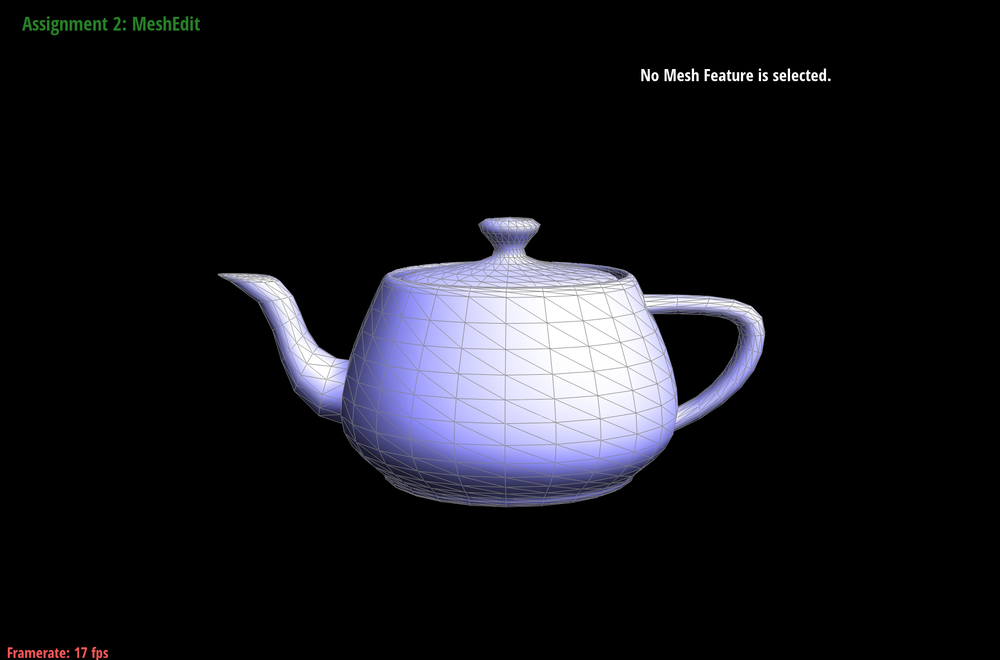

Overview
We implement rendering objects starting from the 2D perspective to the 3D perspective with the ability to upsample these shapes using loop subdivision.
Section I: Bezier Curves and Surfaces
Part 1: Bezier Curves with 1D de Casteljau Subdivision
Briefly explain de Casteljau's algorithm and how you implemented it in order to evaluate Bezier curves.
De Casteljau's algorithm recursively interpolates adjacent points, each time decreasing
the number of points by one until there is only one point. The two points are weighted
by a value t that is within the range 0 to 1 inclusive. Another
way to think of this is that we are cutting the corners of the
sharp figure. Below is the linear interpolation equation used for two points.
\[p'_i = lerp(p_i,p_{i+1},t) = (1-t)p_i + tp_{i + 1}\]
To implement this, we only implement a single recursive step where we are given
a list of points and interpolate two adjacent points and add them to another list. Returned from
this function is an array of size n - 1 where n is the size of the provided list of points.
Example of including a single figure
Final Curve
Show screenshots of each step / level of the evaluation from the original control points down to the final evaluated point. Press E to step through. Toggle C to show the completed Bezier curve as well.
Example of including multiple figures
|
Level 0
|
Level 1
|
|

Level 2
|
Level 3
|
|
Level 4
|
Show a screenshot of a slightly different Bezier curve by moving the original control points around and modifying the parameter \(t\) via mouse scrolling.
Different Curve
Part 2: Bezier Surfaces with Separable 1D de Casteljau
Briefly explain how de Casteljau algorithm extends to Bezier surfaces and how you implemented it in order to evaluate Bezier surfaces.
Similar to how de Casteljau uses n control points for Bezier Curves,
de Casteljau uses \(n x n \) control points for Bezier Surfaces. We first flatten the curves in one direction with the
parameter \(u \) to make this into a Bezier curve situation. After we performed the de Casteljau algorithm on the new \(n \) points
with the parameter \(v \) to find our final point.
Our implementation required three parts, implementing the functions evaluateStep, evaluate1D, and evaluate.
evaluateStep
Like part 1, we interpolated two adjacent points and added to a new list given a local variable \(t \).
evaluate1D
In this function, we iteratively called the above function with a given local variable \(t \) until we had only one point. Returned is this new point.
evaluate
In this funcion, in one direction we call evaluate1D with a provided variable \(u \) to get \(n \) new control points. After we call evaluate1D with a provided
variable \(v \) to represent that we are interpolating in the other direction. In the end we have one new point.
Show a screenshot of bez/teapot.bez (not .dae) evaluated by your implementation.
bez/teapot.bez
Section II: Triangle Meshes and Half-Edge Data Structure
Part 3: Area-Weighted Vertex Normals
Briefly explain how you implemented the area-weighted vertex normals.
We implemented area-weighted vertex normals by iterating through our half edges of a vertex and
computing the area vector of each face of a half edge. To compute the area vector, we created a similar function to
the normal function in the face class but does not return the unit vector. We add this resulting vector to a local
variable that is initialized to \((0,0,0) \). After iterating through all the faces we return the unit vector of the sum of vectors.
Show screenshots of dae/teapot.dae (not .bez) comparing teapot shading with and without vertex normals. Use Q to toggle default flat shading and Phong shading.
|

With Vertex Normals
|
Without Vertex Normals
|
Part 4: Edge Flip
Briefly explain how you implemented the edge flip operation and describe any interesting implementation / debugging tricks you have used.
We first check if the provided edge iterator is a boundary, if it is we can just return it.
Given the provided edge, we can get the all the faces, points, and halfedges relative to this edge flip.
We retrieve these through pass by value so that we don't change the values of the edges at the moment.
We can denote each of these triangles as \(ABC \) and \(BCD \) for now.
Consider the given edge as \(e_0 \), we perform the following reassignments for the vertices.
\[e_{0, half edge} = AD \]
\[A_{half edge} = AD \]
\[B_{half edge} = BD \]
\[C_{half edge} = CA \]
\[D_{half edge} = DA \]
Additionally we reassign the half edge for the two faces of the shape we obtained at the beginning.
\[f_{1,half edge} = AD \]
\[f_{2,half edge} = DA \]
Finally we reassign the neighbors of all of the halfedges in our shape.
\[CA_{neighbors} = (next = AD, twin = CA_{twin}, vertex=C, edge = CA_{edge}, face = f_1)\]
\[AD_{neighbors} = (next = DC, twin = DA, vertex=e_0, edge = e_0, face = f_1)\]
\[DC_{neighbors} = (next = CA, twin = DC_{twin}, vertex=D, edge = DC_{edge}, face = f_1)\]
\[BD_{neighbors} = (next = DA, twin = BD_{twin}, vertex=B, edge = BD_{edge}, face = f_2)\]
\[DA_{neighbors} = (next = AB, twin = AD, vertex=e_0, edge = e_0, face = f_2)\]
\[AB_{neighbors} = (next = BD, twin = AB_{twin}, vertex=A, edge = EB_{edge}, face = f_2)\]
Returned is the provided edge that has been modified.
Show screenshots of the teapot before and after some edge flips.
|
Before Edge Flips
|
After Edge Flips
|
Write about your eventful debugging journey, if you have experienced one.
N/A
Part 5: Edge Split
Briefly explain how you implemented the edge split operation and describe any interesting implementation / debugging tricks you have used.
We first check if the provided edge is a boundary edge. This splits the the function into two scenarios that are described below.
Edge is a boundary
We first gather all of the halfedges that will be in use for splitting. These half edges will be
\((cb, bc, ca, ab) \). If the input edge \(e_0 \)'s half edge is a
boundary, we can set \(cb \) to be the half edge of \(e_0 \), otherwise we get the twin of \(e_0 \)'s half edge.
The half edge \(bc \) will be the twin of \(cb \). We get \(ca \) from \(bc_{next} \) and \(ab \) from \(ca_{next} \). All vertices \((a,b,c) \) are gatered from the half
edge that points away from the point
Next we create our new vertex and give the vertex \(m \) some edges that go to the existing
vertices of the triangle. we create four new half edges \((bm, mb, cm, mc) \) and new edges \((MB, MC) \). Write now, the half edges \(am \) and \(mc \) can be set to \(bc \) and \(cb \) respectively.
We create new faces \(f_1 \) and \(f_2 \) and set the virtual face the be the face of the half edge of \(cb \).
We set the virtual half edge \(bd \) to be \(cb_{next} \) and find the half edge \(ec \) by looping over the vertex c until the next edge is \(bc \).
We set the position of the new vertex \(m \) to be the middle point between vertices \(b \) and \(c \) by just multiple \(1/2 \) by the sum of the points.
Now we reassign the half edges of our points and faces.
\[m_{halfedge} \rightarrow ma \]
\[a_{halfedge} \rightarrow am \]
\[b_{halfedge} \rightarrow bm \]
\[c_{halfedge} \rightarrow cm \]
\[MA_{halfedge} \rightarrow ma \]
\[MB_{halfedge} \rightarrow mb \]
\[MC_{halfedge} \rightarrow mc \]
\[f_{1, halfedge} \rightarrow am \]
\[f_{2, halfedge} \rightarrow bm \]
\[vf_{halfedge} \rightarrow cm \]
Finally we reassign the neighbors of each of the alfedges.
\[ca_{neighbors} = (next = am, twin = ca_{twin}, vertex = c, edge = ca_{edge}, face = f_1)\]
\[ab_{neighbors} = (next = bm, twin = ab_{twin}, vertex = a, edge = ab_{edge}, face = f_2)\]
\[am_{neighbors} = (next = mc, twin = ma, vertex = a, edge = MA, face = f_1)\]
\[bm_{neighbors} = (next = ma, twin = mb, vertex = b, edge = MB, face = f_2)\]
\[cm_{neighbors} = (next = mb, twin = mc, vertex = c, edge = MC, face = vf)\]
\[ma_{neighbors} = (next = ab, twin = am, vertex = m, edge = MA, face = f_2)\]
\[mb_{neighbors} = (next = bd, twin = bm, vertex = m, edge = MB, face = vf)\]
\[mc_{neighbors} = (next = ca, twin = cm, vertex = m, edge = MC, face = f_1)\]
Edge isn't a boundary
We follow a similar sequence to above, but we add an additional vertex \(d \).
We first gather all of the halfedges that will be in use for splitting. These half edges will be \((ca, bd, ab, dc) \).
We set \(bc_{next} \) to be \(ca \), \(cb_{next} \) to be \(bd \), \(ca_{next} \) to be \(ab \), and \(bd_{next} \) to be \(dc \).
The vertices were found from the edges that pointed away from them.
We now implement our new vertex m. The edges \((MA, MB, MC, MD) \) are made.
We create new half edges\((am, ma, bm, mb, cm, mc) \) and set \(bc \) tp be \(dm \) and \(cb \) to be \(md \).
We then create our new faces \((f_1, f_2, f_3, f_4) \). \(f_1 \) will be the face of \(bc \) and \(f_2 \) will be the face of \(cb \). \(f_3 \) and \(f_4 \) will be entirely new faces.
Like before, we find the position of m to be the middle point of \(b \) and \(c \). We set the half edge of our new vertex \(m \) to be \(ma \).
Now we set the half edges of all of our faces, vertices, and edges.
\[f_{1,halfedge} \leftarrow am \]
\[f_{2,halfedge} \leftarrow bm \]
\[f_{3,halfedge} \leftarrow dm \]
\[f_{4,halfedge} \leftarrow cm \]
\[a_{halfedge} \leftarrow am \]
\[b_{halfedge} \leftarrow bm \]
\[c_{halfedge} \leftarrow cm \]
\[d_{halfedge} \leftarrow dm \]
\[MA_{halfedge} \leftarrow ma \]
\[MB_{halfedge} \leftarrow mb \]
\[MC_{halfedge} \leftarrow mc \]
\[MD_{halfedge} \leftarrow md \]
Finally we reassign the neighbors of each of the edges.
\[ca_{neighbors} = (next = am, twin = ca_{twin}, vertex = c, edge = ca_{edge}, face = f_1)\]
\[ab_{neighbors} = (next = bm, twin = ab_{twin}, vertex = a, edge = ab_{edge}, face = f_2)\]
\[bd_{neighbors} = (next = dm, twin = bd_{twin}, vertex = b, edge = bd_{edge}, face = f_3)\]
\[dc_{neighbors} = (next = cm, twin = dc_{twin}, vertex = d, edge = dc_{edge}, face = f_4)\]
\[am_{neighbors} = (next = mc, twin = ma, vertex = a, edge = MA, face = f_1)\]
\[bm_{neighbors} = (next = ma, twin = mb, vertex = b, edge = MB, face = f_2)\]
\[cm_{neighbors} = (next = md, twin = cm, vertex = c, edge = MC, face = f_4)\]
\[dm_{neighbors} = (next = mb, twin = md, vertex = d, edge = MD, face = f_3)\]
\[ma_{neighbors} = (next = ab, twin = am, vertex = m, edge = MA, face = f_2)\]
\[mb_{neighbors} = (next = bd, twin = mb, vertex = m, edge = MB, face = f_3)\]
\[mc_{neighbors} = (next = ca, twin = cm, vertex = m, edge = MC, face = f_1)\]
\[md_{neighbors} = (next = dc, twin = md, vertex = m, edge = MD, face = f_4)\]
For both scenarios, returned is the vertex \(m \). For part 6, we set the new edges and vertex's
isNew value to true.
Screenshots before splits, after splits, and after splits and flips.
|
Before Edge Splits
|
After Edge Splits
|
After Edge Flips and Splits
|
Write about your eventful debugging journey, if you have experienced one.
N/A
If you have implemented support for boundary edges, show screenshots of your implementation properly handling split operations on boundary edges.
|
Before Boundary Split 1
|
After Boundary Split 1
|
|
Before Boundary Split 2
|
After Boundary Split 2
|
Part 6: Loop Subdivision for Mesh Upsampling
Briefly explain how you implemented the loop subdivision and describe any interesting implementation / debugging tricks you have used.
To implement loop subdivision, we split the upsample function into three parts.
Part 1
In this part, we looped through the vertices in the provided mesh and checked if these vertices were on a boundary.
If the vertex was a boundary, we find the half edge of the vertex that is also not a boundary. With this half edge,
we set the new position of the vertex to be \(\frac{a + c}{8} + \frac{3b}{4} \), where \((a,b,c) \) was
the points along an adjacent triangle. If the vertex was not a boundary, we create a double value \(u \) that was \(\frac{3}{16} \) if the degree of the vertex was 3 or \(\frac{3}{8n} \) otherwise.
We set the new position of the provided vertex to be \(1 - nu \) of the position of itself. We did this with all points that go out of the vertex.
Part 2
In step 2 of upsampling, we loop through the edges of the mesh and check if these edges were on a boundary or not. If the edge was on a boundary, we can set the new position of the edge to be
\(\frac{a +b}{2} \) where \(a \) and \(b \) were points on the ends of the edge. If the edge was not on a boundary (ie. there are 4 points), we set the
new position of the edge to be \(\frac{3(a + b) + c + d}{8} \) where \((a,b,c,d) \) are points in the shape.
Part 3
For this step, we split edges, flip edges, and update the vertex position and flags. To split and flip edges,
we loop thorugh the edges of the mesh and split or flip the edge. We set the position of the returned split edge to the new position of the current edge.
For flipping the edge, we only flip the edge if its new and one of the vertices associated with the half edge and its twin are marked as new. To update the position of each position of the vertex to its new position and set it as false.
Take some notes, as well as some screenshots, of your observations on how meshes behave after loop subdivision. What happens to sharp corners and edges? Can you reduce this effect by pre-splitting some edges?
After some loop subdivisions, sharp corners and edges become rounder. If we presplit some edges, we can preserver some of the shape.
Load dae/cube.dae. Perform several iterations of loop subdivision on the cube. Notice that the cube becomes slightly asymmetric after repeated subdivisions. Can you pre-process the cube with edge flips and splits so that the cube subdivides symmetrically? Document these effects and explain why they occur. Also explain how your pre-processing helps alleviate the effects.
We can create a more symmetric cube by splitting and flipping to make the edges of the triangles more symmetric. Originally the triangles does not split the cube into equal parts making for some weird interpolation when upscaling. Our preprocessing
evens out the partitions to make it more symmetric.
If you have implemented any extra credit extensions, explain what you did and document how they work with screenshots.
Boundary Edges
Boundary Edge implementation in above writeup.